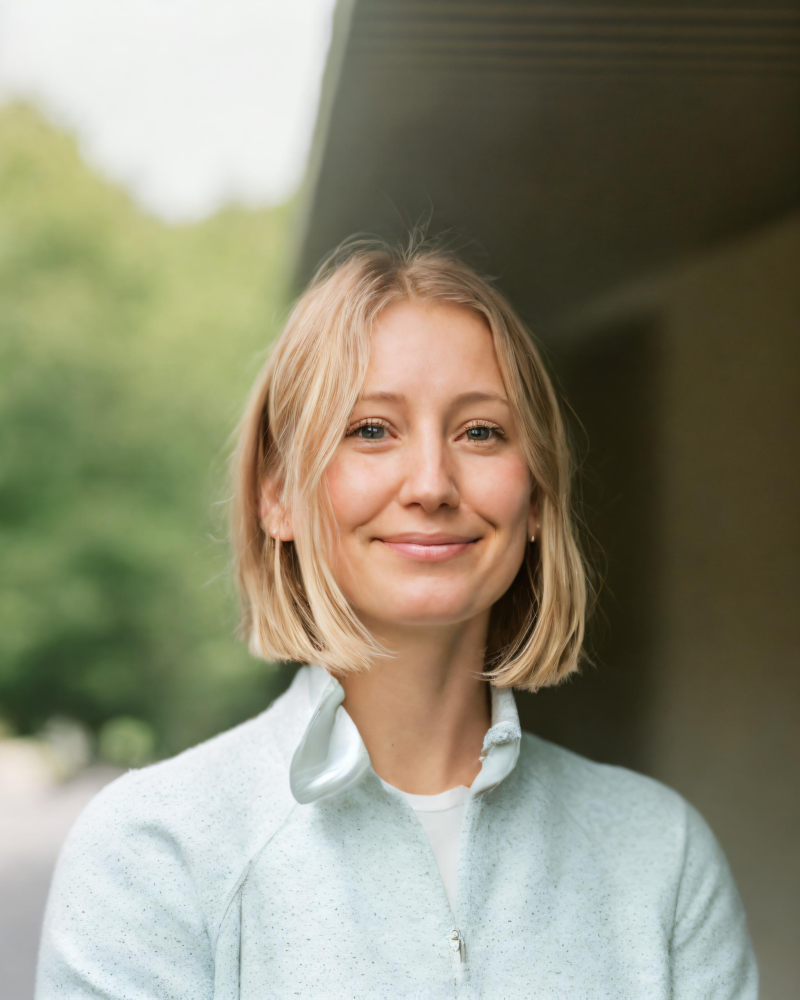

Nicole Kelly

Professional Profile
With a robust background spanning over 7 years in the
Biopharmaceutical/Biomedical sector, I set my sights on New Zealand,
propelled by a deep-seated passion for both professional advancement and
international exposure. This journey inspired me to delve into Software
Engineering, a decision I arrived at after thorough research and
insightful interviews, eager to explore new horizons in this dynamic
field.
Armed with a Bachelor of Science in Microbiology and a recently obtained
industry-accredited Certificate in Software Engineering from AUT, I
possess the practical skills to conceptualize and implement innovative
software solutions. Now aspiring to transition into a developer role, I
remain dedicated to continuous learning and personal growth. Eager to
contribute to Auckland's vibrant tech ecosystem, I bring with me a proven
track record of adaptability and a genuine passion for fostering
innovation. With these qualities, I am poised to make a significant impact
within any forward-thinking organization.
Education & Extracurricular
Institute of Data
Jun 2023 - Jan 2024
Graduate Certificate in Software Engineering (Auckland University of
Technology Accredited)
Capstone Project
- Ecommerce App - Fresh Meal Delivery Service
- https://github.com/nokerenee/ECOMMERCE-NOURISHED-Client.git
- https://github.com/nokerenee/ECOMMERCE-NOURISHED-Server.git
Key modules covered:
- Introduction to Programming
- Web Development 101
- Managing Code
- Intro to NodeJS, API, REST
- Package Managers
- Debugging
- Variables and Data Structures
- Software Requirements Specifications (SRS)
- Testing
- How the internet works (IPs, ports, HTTP, web browsers)
- Front-End Development
- Back-End Development
- Databases
- API Development
- Deployment and Maintenance
GE Aerospace Explore Digital Technology Virtual Experience
Forage - Jan 2024
-
Completed Vue.js UI development simulation, showcasing proficiency in
Vue SFC Playground.
-
Enhanced user interactions by adding features like headings, images, and
dynamic variable displays. Implemented an efficient compute button.
-
Drafted precise technical requirements to optimize order times for plane
parts, aligning technical specifications with business requirements for
effective solutions.
Colorado State University
2010 - 2014
- Bachelor of Science in Microbiology
Work Experience
Barista / Front of House
Eat Drink Laugh / Auckland, NZ
Dec 2022 - Current
Accredited Employer Work Visa employment (full-time)
-
Prepare and serve high-quality coffee, tea, specialty beverages, and
cocktails with precise calibration of bean grind and espresso machine
maintenance.
-
Maintain café standards through proper merchandising, stocking, and
storage of products, as well as operating the till and handling payment
transactions.
-
Ensure a seamless dining experience by handling bookings, guiding
customers to tables, presenting menus, and accurately delivering food
and beverage orders.
Cafe Assistant / Barista
Goodness Jervois Road / Auckland, NZ
Jul 2022 - Dec 2022
Working Holiday Visa employment (full-time)
- Receive and confirm walk-in and phone reservations.
-
Guide diners, manage food and beverage requests, and ensure accurate
order delivery.
-
Maintain an accurate cash drawer, process payments, follow inventory
procedures, and resolve customer issues to ensure a seamless and quality
customer experience.
Cell Culture Associate
Novo Nordisk / Fremont, CA, USA
Sep 2020 - Apr 2022
-
Produce cell therapy products using undifferentiated human embryonic
stem cells in a GTP/GMP compliant cleanroom, adhering to manufacturing
procedures and SOPs.
-
Collaborate with UCSF to develop GMP-compliant hESC lines for various
regenerative medicine therapy programs.
-
Contribute to documentation processes by writing and reviewing master
production records, SOPs, deviations, change requests, training
materials, protocols, reports, and other required documentation.
Center Medical Specialist
Biomat USA (Grifols) / Lakewood, CO, USA
Jan 2018 - Sep 2020
-
Select suitable plasmapheresis donors by performing physical exams and
obtaining medical histories in line with approved SOPs and state/federal
guidelines.
-
Conduct pre-donation medical screening and phlebotomy adhering to
established guidelines, providing feedback and education to ineligible
donor candidates.
-
Operate automated plasmapheresis machines, handling setup, calibration,
maintenance, and troubleshooting, and respond to donor injuries and
adverse reactions.
Production Associate II
BioMARC (Colorado State University) / Fort Collins, CO, USA
Sep 2014 - Jun 2017
-
Lead a production team in developing USDOD-funded vaccines for
Ebola/Marburg and Venezuelan equine encephalitis virus.
-
Manage clean room commissioning and maintenance, overseeing production
activities under FDA regulations.
-
Serve as an SME for cell culture activities during FDA audits and client
meetings.
Skills
Technical Skills
- HTML, CSS
- JavaScript Programming
- NodeJS
- API Development
- VS Code
- Database Design
- FIGMA
- Bootstrap
- MongoDB, MySQL, Redis
- Docker
- Software Deployment
- CI/CD with GitHub Actions, EC2
- Beanstalk
- Vue.js
Soft Skills
- Leadership
- Collaboration
- Solution focused communication
- Adaptability
- Time management
- Problem-solving
- Strategic planning
- Work ethic
- Emotional intelligence
Awards / Achievements
- Team Excellence Award - BioMARC (Dec 2015)
Contact Me